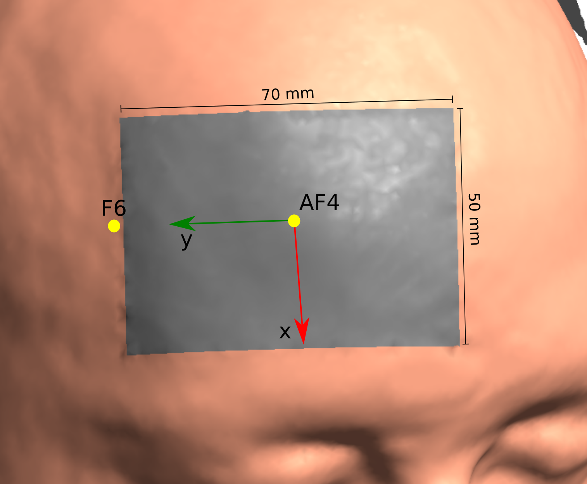

ELECTRODE¶
Describes electrode position, direction and geometry
Initialization¶
Python
from simnibs import sim_struct s = sim_struct.SESSION() tdcs_list = s.add_tdcslist() electrode = tdcs_list.add_electrode()
MATLAB
s = sim_struct('SESSION'); s.poslist{1} = sim_struct('TDCSLIST'); electrode = s.poslist{1}.electrode(1);
Attributes¶
centre: list/array of floats or string/character array (Python/MATLAB)
Description: Center of the electrode. Can either be a set of coordinates in the head model or the name of an EEG 10-10 electrode position
Example Python/MATLAB
Center the electrode in Cz
electrode.centre = 'Cz'
Center the electrode using the coordinates
electrode.centre = [-1.2, -15.8, 116.0]
Note: More about coordinates in SimNIBS. Coordinates do not need to be exactly in the skin surface, as SimNIBS automatically finds the closest point in the skin surface.
pos_ydir: list/array of floats or string/character array (Python/MATLAB)
Description: Position along the electrode’s y axis. Can either be a set of coordinates in the head model or the name of an EEG 10-10 electrode position
Example: Python/MATLAB
To set-up an electrode centered at AF4 and with a y axis pointing laterally, you can use
electrode.centre = 'AF4' electrode.pos_ydir = 'F6'
The resulting electrode is oriented such as the following:
Note: Not required for circular electrodes. More about coordinates in SimNIBS. Coordinates do not need to be exactly in the skin surface, as SimNIBS automatically finds the closest point in the skin surface.
shape: ‘rect’ or ‘ellipse’ or ‘custom’
Description: Shape of the electrode
‘rect’: Rectangle
‘ellipse’: Elliptical electrode
‘custom’: Custom shape (see vertices attribute)
Note: To create a circular electrode, set shape to ‘ellipse’ and the two dimensions to the desired diameter.
dimensions: list/array of floats (Python/Matlab)
Description: Size of the electrode along the x and y directions of the electrode axes, in mm.
Example: Python/MATLAB
To reproduce the electrode in the image shown above, you can use
electrode.centre = 'AF4' electrode.pos_ydir = 'F6' electrode.shape = 'rect' electrode.dimensions = [50, 70]
To create a small 2cm (20mm) diameter electrode in Cz, use
electrode.centre = 'Cz' electrode.shape = 'ellipse' electrode.dimensions = [20,20]
Note: only needed if shape is set to ‘rect’ or ‘ellipse’
thickness: list/array of floath (Python/Matlab)
Description: Array with electrode thickness, in mm. Can have 1, 2 or 3 elements
1 element: Will be a simple electrode, composed of only saline.
2 elements: Electrode with two layers, corresponding to a silicone rubber on top of a saline gel
3 elements: Electrode with three layers, corresponding silicone rubber electrode inside a sponge with saline solution. Only valid for rectangular and elliptical electrodes
Example: Python/MATLAB
Electrode composed of a 5mm thick saline gel in the bottom and a 2mm thick rubber electrode on top
electrode.thickness = [5, 2]
Electrode 2mm thick rubber electrode in the middle of a 8mm thick sponge
electrode.thickness = [4, 2, 4]
Reference: Saturnino et al., 2016
channelnr: int
Description: number of the channel this electrode is connected to. Corresponds to an entry in the currents attribute of the TDCSLIST structure
Example: MATLAB
Set the first electrode as an anode and the second as a cathode, 1mA current.
tdcslist.currents = [1e-3, -1e-3]; tdcslist.electrode(1).channelnr = 1; tdcslist.electrode(2).channelnr = 2;
Set the one electrode as an anode and the 4 other as cathodes. Connect each cathode to a different channel with a current of 0.25mA
tdcslist.currents = [1e-3, -0.25e-3, -0.25e-3, -0.25e-3, -0.25e-3]; tdcslist.electrode(1).channelnr = 1; tdcslist.electrode(2).channelnr = 2; tdcslist.electrode(3).channelnr = 3; tdcslist.electrode(4).channelnr = 4; tdcslist.electrode(5).channelnr = 5;
Instead, connect all cathodes to a single channel. This way, a total current of 1mA will flow through the cathodes, but it will not be equally distributed.
tdcslist.currents = [1e-3, -1e-3] tdcslist.electrode(1).channelnr = 1; tdcslist.electrode(2).channelnr = 2; tdcslist.electrode(3).channelnr = 2; tdcslist.electrode(4).channelnr = 2; tdcslist.electrode(5).channelnr = 2;
dimensions_sponge: list/array of floats (Python/MATLAB), optional
Description: Dimensions of the sponge, in mm, must be larger than the electrode dimensions. Required for sponge electrodes (see the thickness attribute)
Example: Python/MATLAB
Simulate a 50x70mm rubber electrode in a 100x100mm sponge
electrode.shape = 'rect' electrode.dimensions = [50, 70] electrode.thickness = [4, 2, 4] electrode.dimensions_sponge = [100, 100]
vertices: 2D list/arrat of floats (Python/MATLAB), optional
Description: Gives the vertices of the electrodes in a 2D plane (if definition is ‘plane’ and shape is ‘custom’) or in the head surface (if definition is ‘conf’). The vertices should be ordered either in clockwise or counter-clockwise direction.
Example:
Python
Create a triangular electrode
electrode.shape = 'custom' electrode.vertices = [ [-10, -10], [10, -10], [0, 10]]
MATLAB
Create an electrode based on points sampled from the head surface
electrode.definition = 'conf' electrode.vertices = [... 0.8, 72.4, 81.7;... 57.6, 45.0, 66.8;... 58.7, 64.5, 25.8;... -0.8, 90.21, 38.4]
definition: ‘plane’ or ‘conf’, optional
Description: How the electrodes are defined.
‘plane’: Electrodes are set through a shape and dimensions, defined in a 2D plane
‘conf’: Electrodes are set by giving the coordinates of their vertices in the subject space.
Default: ‘plane’
Note: See the documentation for the vertices attribute for more information.
holes: list/array of ELECTRODE structures
Description: Defines holes in the electrodes. For that, we used a nested ELECTRODE structure.
Example:
Python
Make a ring electrode with outer diameter 100mm and inner diameter 80mm
electrode.shape = 'ellipse' electrode.dimensions = [100, 100] electrode.thickness = 4 hole = electrode.add_hole() hole.shape = 'ellipse' hole.dimensions = [80, 80] hole.centre = [0, 0]
MATLAB
Same as the above
electrode.shape = 'ellipse'; electrode.dimensions = [100, 100]; electrode.thickness = 4; electrode.holes = sim_struct('ELECTRODE'); electrode.holes.shape = 'ellipse'; electrode.holes.dimensions = [80, 80]; electrode.holes.centre = [0, 0];
Note: Hole centers can be defined in the 2D plane defined by the electrode
plug: list/array of ELECTRODE structures
Description: Defines the region where the stimulator cable comes in.
Example:
Python
Define a 50x70mm rectangular electrode and place a small plug in the middle of the small edge, to the right of the electrode.
electrode.shape = 'rect' electrode.dimensions = [50, 70] electrode.thickness = 4 plug = electrode.add_plug() plug.shape = 'rect' plug.dimensions = [5, 20] plug.centre = [0, 25]
MATLAB
Same as the above
electrode.shape = 'rect'; electrode.dimensions = [50, 70]; electrode.thickness = 4; electrode.plug = sim_struct('ELECTRODE'); electrode.plug.shape = 'rect'; electrode.plug.dimensions = [5, 20]; electrode.plug.centre = [0, 25];
Reference: Saturnino et al., 2016
Examples¶
Define a rectangular electrode of dimensions 50x70mm, placed at AF4 and pointing laterally, composed of a saline layer of 4mm and a rubber layer of 2mm.
Python/MATLAB
electrode.centre = 'AF4' electrode.pos_ydir = 'F6' electrode.shape = 'rect' electrode.dimensions = [50, 70] electrode.thickness = [4, 2]
Define a ring electrode with an outer diameter of 80mm and an inner diameter of 60mm, placed on C3. The electrode is modelled as a single saline layer of 5mm
Python
electrode.centre = 'C3' electrode.shape = 'ellipse' electrode.dimensions = [80, 80] electrode.thickness = [5] hole = electrode.add_hole() hole.centre = [0, 0] hole.shape = 'ellipse' hole.dimensions = [60, 60]
MATLAB
electrode.centre = 'C3'; electrode.shape = 'ellipse'; electrode.dimensions = [80 80]; electrode.thickness = 5; electrode.holes = sim_struct('ELECTRODE'); electrode.holes.centre = [0 0]; electrode.holes.shape = 'ellipse'; electrode.holes.dimensions = [60 60];
Define a 50x50x2mm silicone rubber electrode placed in the middle of a 60x70x10mm sponge soaked in saline solution. Place the electrode over C6 pointing anteriorly
Python/MATLAB
electrode.shape = 'rect' electrode.dimensions = [50, 50] electrode.thickness = [5, 2, 5] electrode.dimensions_sponge = [60, 70] electrode.centre = 'C6' electrode.pos_ydir = 'FC6'